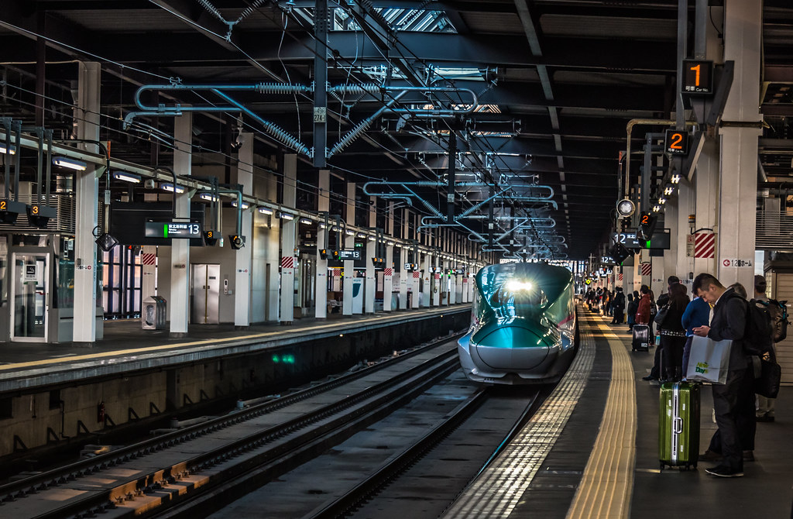
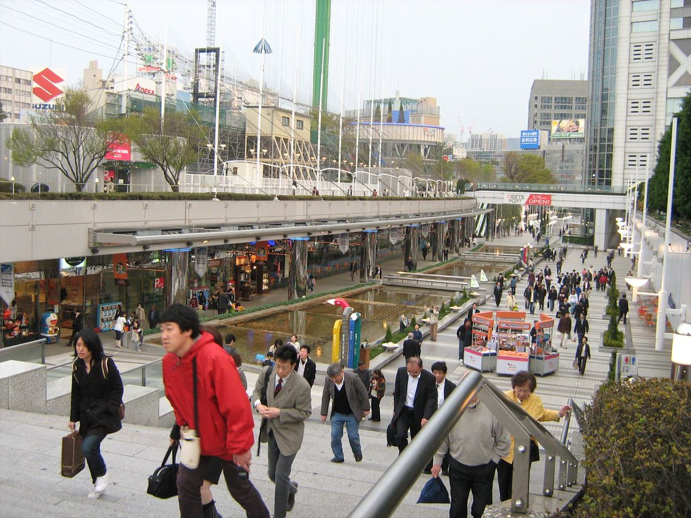
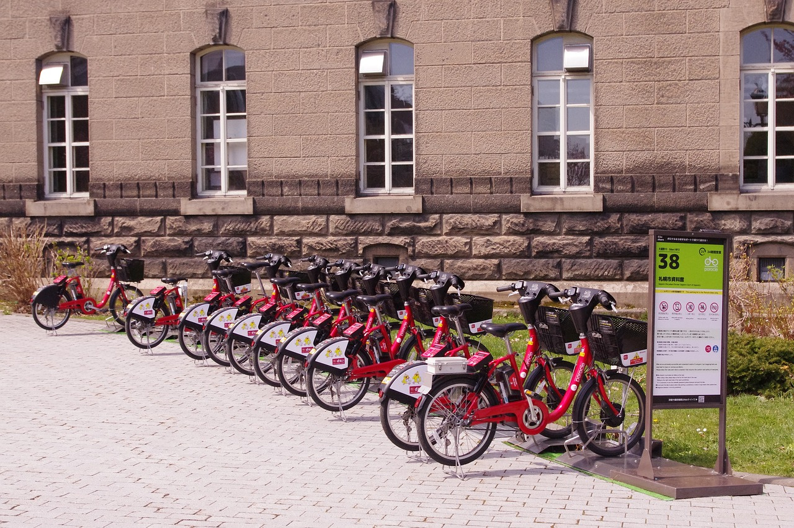
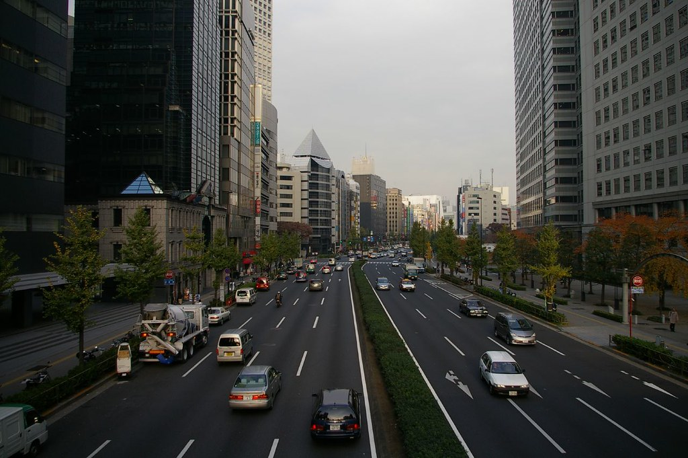

"Japan Tokyo Pref Map" by T. Kambayashi, licensed under a CC BY-SA3.0 License.
{kind=link}
As can be seen, Tokyo is a vast city comprised of 23 special wards, each unique. As such, there are several means of transport popular with locals and tourists alike:
- Metro 
- Whilst visiting Tokyo, the metro is definitely the way to go in terms of travel. The two primary subway systems, the Tokyo Metro and Toei Subways, span across the entire city, with travelers not having to walk more than a few steps before finding a convenient metro station. Moreover, trains come very regularly, and visitors can pay using a prepaid card that you simply swipe. Because of this, the Tokyo Metro is extremely convenient, making it one of the best modes of transport throughout the city.
- Walking 
- Walking is another common option for transport across Tokyo. Whilst not the best option for cross-city travel, central Tokyo especially is extremely walkable, making it easy for visitors to take short walks between major attractions and sightseeing destinations.
- Biking 
- Although less popular, biking is still a commonly used method of transport across Tokyo. Shared bikes are scattered throughout the city, making bike access available to many. It is important to note that some streets many streets lack cycling lanes, so bikers should be aware of their surroundings whilst commuting.
- Cars 
- Car travel is often not the best mode of transport within Tokyo. Whilst congestion is not as bad as other major cities, taxis and car-sharing services (eg Uber) often come at a steep price, making car travel not as convenient as the aforementioned metro and bike services.
"Early morning Shinkansen in Morioka" by Thor Edvardsen is licensed under CC BY-NC-ND 2.0 


 .
.
"People walking towards Tokyo Dome" by edmundyeo is licensed under CC BY-NC-SA 2.0 


 .
.
Licensed under Pixabay License
Tokyo Road" by zarkokov is licensed under CC BY-NC 2.0 

 .
.